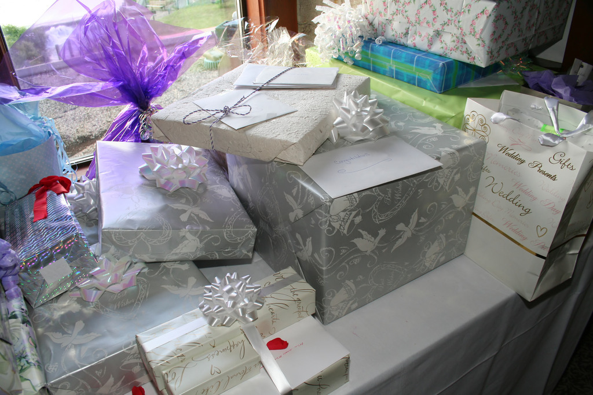
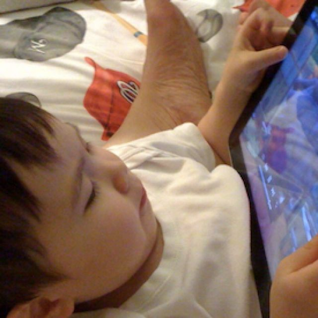
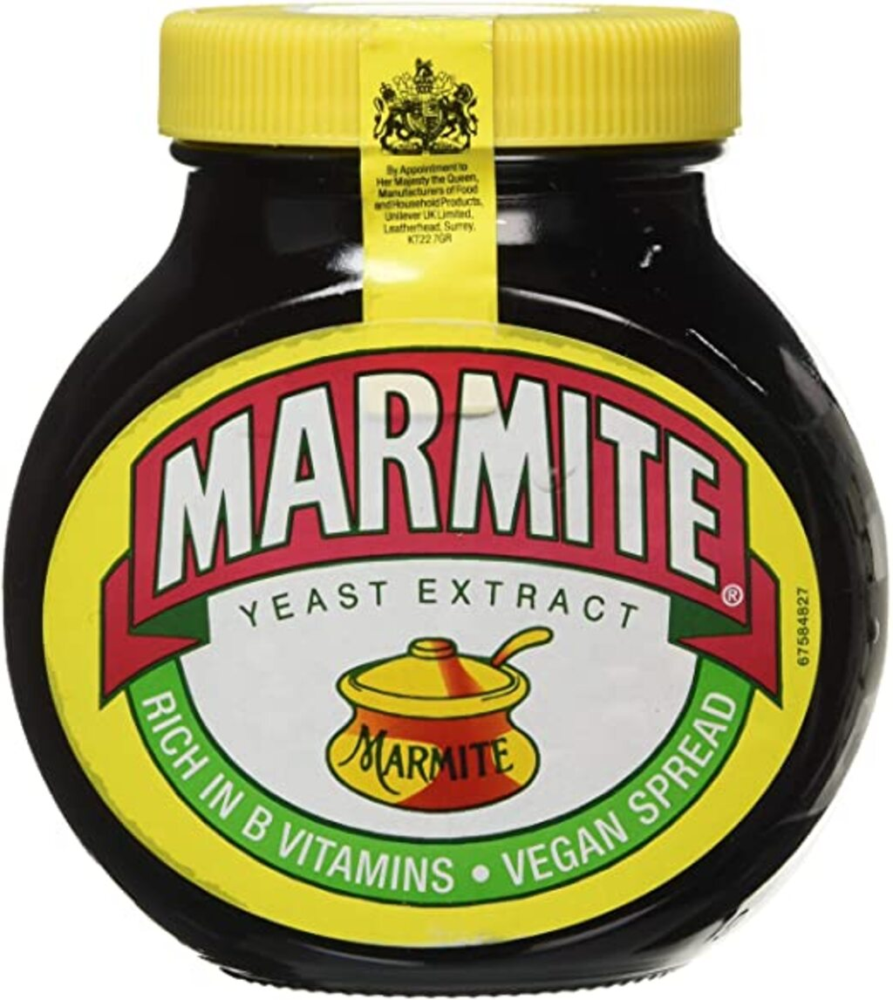
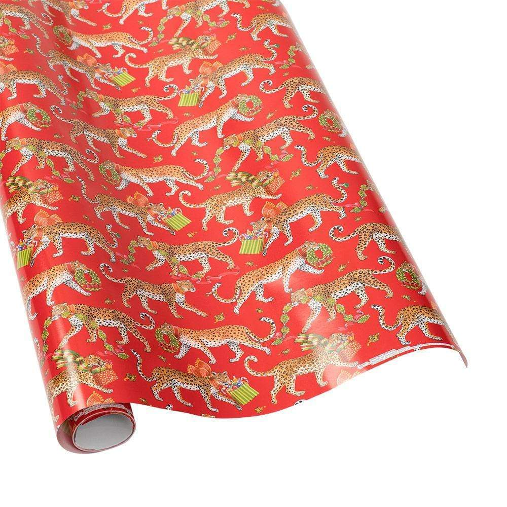

1 Bases de données
1.1 Vocabulaire
| Français | English |
|---|---|
| à l’égard de | regarding |
| stable | steady |
| l’aube | dawn |
| remettre en cause | to call into question |
| le mal | evil |
| une série | a series |
| être agenouillé | to kneel (knelt x 2) |
| parmi | among |
| capacité d’attention | attention span |
| interdire | to ban |
| un tiers | a third |
| superviser | to oversee |
| une exposition | an exhibition |
| de la boue | mud |
| engendrer | to spawn |
| selon | according to |
| médicolégal | forensic |
| équivalent à | tantamount to |
| un exemple pertinent | a case in point |
| un casque | a helmet |
| bien que (a…) | although |
| exposer | to display |
| commander une œuvre d’art | to commission |
| être fort probablement | to be likely to |
| infondé | unfounded |
| fuir, éviter | to shun |
| un conservateur de musée | a curator |
| disponible | available |
| renforcer | to buttress |
| s’attendre à qqch | to expect stg |
| un domaine | a field |
| cohérent | consistent |
| sagesse | wisdom |
| supposer | to assume |
| un taux | a rate |
| néanmoins | nonetheless |
| une pelote à épingles | a pincushion |
| to seek | chercher |
| au lieu de | instead of |
| la variole | smallpox |
| une entremetteuse | a procuress |
| une maison close | a brothel |
| aisé | wealthy |
| acajou | mahogany |
| marcher sur la pointe des pieds | to tiptoe |
| une servante | a maid |
| le chanvre | hemp |
| un bourreau | a hangman |
| un noeud coulant | a noose |
| faire un clin d’œil | to wink |
| se disputer à propos de | to argue |
| fouiller les ordures | to scavenge |
| une veillée mortuaire | a wake |
| un cercueil | a coffin |
| s’empresser | to rush |
| une gamme de produits | a range |
| un équilibre | a balance |
| en dépit de (d…) | despite |
| un trait de pinceau | a brush stroke |
| un ordinateur portable | a laptop |
| selon, d’après | according to |
| un vol | a theft |
| améliorer | to improve |
| une arnaque | a scam |
| dépendant à | addicted to |
| infortuné | hapless |
| à la fin, finalement | eventually |
| exposer (d…) | to display |
| suffisant, arrogant | smug |
| remarquer | to notice |
| enhardir | to embolden |
| traiter de | to deal with |
| exact | accurate |
| surveiller | to monitor |
| un fer-de-lance | a spearhead |
| mettre en lumière | to shed light on |
| assister à | to attend |
| façonner | to craft |
| compter sur | to rely on |
| très éloigné de | a far cry from |
| plus loin | further |
| un artisan | a craftsman |
| obtenir son diplôme | to graduate |
| la sagesse | wisdom |
| néfaste | harmful |
| une moyenne | an average |
| enlever | to remove |
| hardi, courageux | bold |
| cependant (h…) | however |
| un échantillon | a sample |
| désapprouver qqch | to frown on stg |
| appartenir à | to belong to |
| fournir qqch à qqn | to supply sb with stg |
| une échelle | a scale |
| l’opinion majoritaire | the majority opinion |
| le confinement | the lockdown |
| concret | hands-on |
| un stigmate | a stigma |
| un fief | a foothold |
| un diplôme | a degree |
| cautionner | to endorse |
| nier | to deny |
| tranché, clair | clear-cut |
| des résultats mitigés | mixed results |
| arrêter, entraver | to stunt |
| défendre une idée | to advocate an idea |
| paradoxal | paradoxical |
| prendre en compte | to take into account |
| prendre parti | to take sides |
| promouvoir | to advertise |
| couverture médiatique | coverage |
| affirmer | to assert |
| confier | to vouchsafe |
| citer | to quote |
| étendu | wide-ranging |
| confirmer,soutenir | to uphold |
| un conseil | advice |
| vaincre | to overcome |
| au-delà | beyond |
| des preuves | evidence |
| aplatir | to flatten |
| gagner de l’argent | to earn |
| un PDG | a CEO |
| un voyage scolaire | a field trip |
| proche de | close to |
| un logiciel | a software |
| aller au travail | to commute |
| épuré | streamlined |
| pourtant (y…) | yet |
| être habitué à | to be used to -ING |
| sans honte | shameless |
| étendu | wide |
| équipement pour la maison | houseware |
| partager | to share |
| rendre possible | to allow for |
| le prix | pricing |
| acheter | to purchase |
| un chevalier | a knight |
| des aiguilles à tricoter | knitting needles |
| une entreprise | a company |
| du matériel | hardware |
| quelque peu | somewhat |
| s’abstenir de | to refrain from |
| par conséquent | therefore |
| une tendance | a trend |
| émerger | to arise |
| désintoxication numérique | digital detox |
| se tramer | to brew |
| cependant (n…) | nevertheless |
| 14 sur 20 | 14 out of 20 |
| la plupart | most |
| un manuel scolaire | a textbook |
| bien que (e…) | even though |
| un règlement de comptes | a reckoning |
| un point d’orgue | a highlight |
| un faux | a fake |
| un spécialiste | a scholar |
| rendre possible | to enable |
| rendre une décision | to rule |
| un petit morceau | a patch |
| prudent à l’égard de | wary of |
| abandonner | to leave unattended |
| à moins que | unless |
| doué | gifted |
| à l’intérieur de | within |
| une tentative | an attempt |
| malin, rusé | crafty |
| reconnu coupable | convicted |
| un outil | a tool |
| courageux, hardi | bold |
| authentique | genuine |
| exposer (e…) | to exhibit |
| inattendu | unexpected |
| regarder fixement | to stare |
| servir une peine de prison | to do the time |
| en dépit de (i…) | in spite of |
| inoffensif | innocuous |
| un événement | an event |
| se concentrer sur | to focus on |
| être composé de | to be made up of |
| un pantalon | a pair of trousers |
| le personnel | the staff |
| un atelier | a workshop |
| un cadre | a frame |
| un indice | a clue |
| perdu | unaccounted for |
| un témoin | a witness |
| un échec | a failure |
| un couvercle | a lid |
| une foire | a fair |
| nul, de mauvaise qualité | rubbish |
| finalement | eventually |
| infantile | childish |
| brut | raw |
| divertir, distraire | to entertain |
| un orteil | a toe |
| récolter (un profit) | to net |
| finir par | to end up + ING |
| reconnaître | to acknowledge |
| un marchand d’art | an art dealer |
| tristement célèbre | infamous |
| une veuve | a widow |
| jeter un doute sur… | to cast a doubt on… |
| une mesure, une étape | a step |
| organiser une soirée | to throw a party |
| soulever une question | to raise a question |
| aller à l’encontre d’une tendance | to buck a trend |
| mériter | to deserve |
| riche, aisé | wealthy |
| contrefaire, falsifier | to forge |
| signaler | to flag |
| un mélange | a blend |
| intéressé, cupide | money-grubbing |
| dévoiler, révéler | to expose |
| gagner de l’argent | to earn money |
| duper, abuser | to fool |
| une vente aux enchères | an auction |
| mettre à jour | update |
| le devoir | the duty |
| grâce à | thanks to |
| la confiance | the trust |
| épouser qn | to marry sb |
| les pauvres | the paupers |
| se concentrer sur | to focus |
| sur la pointe des pieds | on tiptoe |
| un point de repère | a landmark |
| de façon frappante | strikingly |
| bordé de | edged with |
| frissonner d’excitation | to thrill |
| une étendue tentaculaire | a sprawl |
| un vacarme | a din |
| tourmenter | to harry |
| des sabots | hooves |
| jaunâtre | sallow |
| colporter | to hawk |
| une perruque | a wig |
| en sus | to boot |
| exclure des profits | to cut out |
| moyen de subsistance principal | |
| ridiculiser en caricaturant | to send up |
| une flatterie | a blandishment |
| un but | an aim |
| provoquer une émeute | to riot |
| réunir | to gather |
| un prêt | a loan |
| vénérer | to worship |
| limiter | to curb |
| franc | candid |
| être en porte-à-faux | to be at odds with |
| velours | velvet |
| récompenser | |
| de façon éreintante | exhaustingly |
| déminer | to defuse |
| pataud | clod-hopping |
| un viol | a rape |
| s’agripper à | to cling to |
| aboyer | to bark |
| ébloui | to dazzle |
| le drapeau britannique | the union Jack |
| une foule | a crowd |
| se promener | to stroll |
| les aisselles | the armpits |
| tant que | so long as |
| inclure | to encompass |
| las | weary |
| la consommation | consumption |
| une famine | a starvation |
| oisif | idle |
| faire allusion à | to allude to |
| sobre (rare) | abstemious |
| un mal | an evil |
| la pourriture | decay |
| saisir | to grip |
| répandu | widespread |
| la folie | insanity |
| abîmer | to damage |
| une racine | a root |
| révéler | to uncover |
| déclencher | to spark |
| la richesse | wealth |
| à côté de | alongside |
| la soif | thirst |
| insatiable | unquenchable |
| représenter | to depict |
| frissonner d’excitation | to thrill |
| moyen de subsistance principal | the mainstay |
| récompenser | reward |
| s’agripper à | to cling to |
| éblouir | to dazzle |
| le drapeau britannique | the Union Jack |
| une mouche | a fly |
| une étincelle | a spark |
| élancé | slender |
| projeter | to cast |
| un dard | a sting |
| peu profond | shallow |
| un mendiant | a beggar |
| un gué | a ford |
| un cadran solaire | a dial |
| soupirer | to sigh |
| offrir | to bid |
| a stream | un torrent |
| a meadow | une prairie |
| wooly | laineux |
| un val | a vale |
| saisir | to seize |
| une épaule | a shoulder |
| une enclume | an anvil |
| oser | to dare |
| un ver | a worm |
| hurler | to howl |
| une tempête | a storm |
| écarlate | crimson |
| la colère | wrath |
| un ennemi | a foe |
| fourbe | deceitful |
| la ruse | wile |
| voir (littéraire) | to behold |
| se glisser | to steal |
| sous | beneath |
| au milieu de (littéraire) | in the midst of |
| une tombe | a grave |
| une robe | a gown |
| de la bruyère | briar |
| un nid | a nest |
| chercher | to seek for |
| une tonnelle | a bower |
| un bosquet | a grove |
| un troupeau | a flock |
| grignoter | to nibble |
| un bourgeon | a bud |
| une fleur | a blossom |
| le sein | the bosom |
| une grotte | a cave |
| verser | to pour |
| attentif | heedful |
| brouter | to graze |
| bêler | to bleat |
| pleurer | to weep |
| la crinière | the mane |
| des frères et sœurs | siblings |
| un commerçant | a shopkeeper |
| gémir | to groan |
| parler d’une voix flûtée | to pipe |
| un démon | a fiend |
| lutter | to struggle |
| s’efforcer de | to strive |
| bouder | to sulk |
1.2 Traductions
| Français | English |
|---|---|
| Avec qui habites-tu ? | Who do you live with? |
| Combien de temps cela te prend-il pour aller à l’École Estienne ? | How long does it take you to go to École Estienne? |
| Où habitais-tu l’année dernière ? | Where did you live last year? |
| Es-tu déjà allé(e) au Musée de la Bourse de Commerce qui a ouvert l’année dernière ? | Have you already been to the MBC which opened last year? |
| Bien que l’enseignement à distance ait des défauts, c’est toujours mieux que rien. | Although online teaching has drawbacks, it is still better than nothing. |
| Regarde ! Ils sont en train d’installer de nouveaux ordinateurs de bureau. | Look! New desktops are being installed. |
| De nombreux ordinateurs portables ont été donnés aux écoles pour améliorer l’enseignement. | Schools have been given a lot of laptops to improve teaching. |
| On peut cependant se demander dans quelle mesure cette initiative a été efficace. | However, one can wonder how efficient this initiative has been. |
| Avec qui as-tu travaillé hier? | Who did you work with yesterday? |
| Quelle question de sondage as-tu posée la semaine dernière ? | Which poll question did you ask last week? |
| À qui écris-tu un message ? | Who are you writing a message to? |
| Que devez-vous écouter pour cette leçon ? | What must you listen to for this lesson? |
| D’un côté on peut défendre l’idée que les nouvelles technologies améliorent l’enseignement. | On the one hand we can advocate the idea that new technologies improve teaching. |
| On ne peut toutefois nier que de nombreux enfants et adolescents sont devenus dépendants des écrans et des réseaux sociaux. | Yes it cannot be denied that many children and teenagers have become addicted to screens and social networks. |
| N’est-il pas paradoxal que les écrans soient interdits aux enfants d’ingénieurs? | Is it not paradoxical that engineers’ children are prohibited from using screens? |
| Si je prends en compte tous ces arguments, je suis forcé de prendre parti… | If I take all these arguments into account, I am forced to take sides… |
| Cela fait plus de dix ans que l’on parle de cette école. | The media have been speaking about this school for more than a decade. |
| On peut se demander si tout cela n’est pas un peu exagéré. | It can be wondered whether all of this has been somewhat blown out of proportion. |
| Pourquoi les ingénieurs seraient-ils compétents en-dehors de leur domaine d’expertise? | Why would engineers be competent outside their field of expertise? |
| Les écoles du centre de l’Amérique ont peut-être réduit leur utilisation des ordinateurs en cours. | Schools in Middle America may have reduced their use of computers in class. |
| Si je suis d’accord avec vous sur ce point, je souhaiterais cependant dire la chose suivante. | Even though I do agree with you on this point, however I would like to say the following. |
| Cet argument ne tient pas debout ! | This argument doesn’t have a leg to stand on! |
| Après avoir écouté les arguments de la partie adverse, je dois dire que je suis loin d’être convaincu. | After listening to the opposite side’s arguments, I must say I am not even remotely convinced. |
| Il est évident que vous mentez de façon éhontée ! | It is obvious you are lying through your teeth! |
| Les tablettes ont été achetées par le gouvernment. | The tablets were bought by the government. |
| On étudie encore l’impact du confinement sur l’enseignement. | The impact of the lockdown on teaching is still being investigated. |
| Les enfants devraient être davantage écoutés. | Children should be listened to more. |
| On pense que les nouvelles technologies sont dangereuses pour les enfants. | New technologies are thought to be dangerous. |
| Il est impossible que Rubens ait peint ce tableau. | Rubens can’t have painted this painting. |
| Les scientifiques ont réalisé des expériences sur ce tableau. | Scientists have carried out experiments on this painting. |
| J’ai lu de nombreuses fois cet incroyable article. | I have read this incredible article many times. |
| Ce tableau est exposé à la National Gallery depuis 40 ans. | This painting has been on display for 40 years. |
| L’expérience esthétique dépend-elle de notre connaissance de l’artiste? | Does our aesthetic experience depend on our knowledge of the artist? |
| Les conservateurs de musée devraient dire la vérité, et n’exposer que d’authentiques œuvres d’art. | Curators should tell the truth and only display genuine works of art. |
| Où est ma collègue ? — Elle doit travailler en salle de réunion. | Where is my colleague? She must be working in the meeting room. |
| Il se pourrait que je l’ai vue dans le bureau des ingénieurs. | I might have seen her in the engineers’ office. |
| Ce message a peut-être été envoyé par erreur. | This message may have been sent by mistake. |
| Hogarth a dû être un artiste très compétent. | Hogarth must have been a very skilled artist. |
| L’exposition aurait dû avoir lieu à Paris. | The exhibition should have taken place in Paris. |
| Il se peut que beaucoup d’artistes tirent encore son inspiration de son œuvre. | A lot of artists may still be drawing their inspiration from his work. |
| Il se pourrait que j’aie oublié d’apporter les documents… | I might have forgotten to bring the documents. |
| Tu aurais pu lui écrire un courriel, elle aurait apprécié. | You could have written her an email, she would have appreciated it. |
| Si tu me dis où se trouvent les ciseaux, je te les apporterai. | If you tell me where the scissors are, I will bring them to you. |
| Si j’étais doué, j’emballerais les cadeaux en deux temps trois mouvements. | If I were gifted, I would wrap the presents in no time. |
| Si le comédien avait parlé plus lentement, j’aurais compris ses blagues. | If the comedian had spoken more slowly, I would have understood her jokes. |
| Avec qui travailles-tu sur le logo du cours ? | Who are you working on the logo with? |
| Nous avons décidé de ne pas utiliser le drapeau britannique. | We decided not to use the Union Jack. |
| Le logo serait plus joli si nous avions eu plus de temps. | The logo would be nicer if we had had more time. |
| Nous avons choisi de ne pas utiliser d’images pour créer notre logo. | We chose not to use any images to create our logo. |
| Le logiciel avec lequel nous avons travaillé est très efficace. | The software we worked with is very efficient. |
| Vous vous demandez peut-être pour quelle raison nous avons adopté cette mise en page. | You may wonder why we adopted this layout. |
| Il se peut que le peintre ait voulu choquer. | The painter may have wanted to shock viewers. |
| Il se pourrait que le personnage à l’arrière-plan soit un policier. | The character in the background might be a policeman. |
| Le personnage principal devait habiter dans une grande ville. | The main character must have lived in a big city. |
| Voilà des heures que je cherche de l’inspiration | I’ve been looking for an internship for months. |
| J’ai passé trois heures hier à essayer de réparer mon ordinateur | I spent three hours yesterday trying to fix my computer. |
| Avec qui vas-tu donner ta présentation ? | Who are you going to give your presentation with? |
| Il se peut que ma coéquipière ait oublié d’apporter nos notes… | My team-mate may have forgotten to bring our notes. |
| Pourquoi ne m’a-t-on pas dit que nous devions faire notre présentation aujourd’hui ?! | Why have I not been told we had to give our presentation today?!! |
| Je ne m’attendais pas à bien aimer la poésie… | I wasn’t expecting to like poetry. |
| Je regrette de n’avoir pas lu davantage de poèmes avant. | I wish I had read more poems before. |
| Voilà vingt minutes que je lis ce poème, je ne le comprends toujours pas. | I’ve been reading this poem for 20 minutes, I still don’t understand it. |
| free verse | poetry that does not rhyme or have a regular meter |
| alliteration | use of the same consonant at the beginning of each word |
| metaphor | a figure of speech that suggests a non-literal similarity |
| simile | a figure of speech expressing a resemblance between things |
| imagery | the ability to form mental pictures of things or events |
| symbol | something visible that represents something invisible |
| tone | a quality that reveals the attitudes of the author |
| stanza | a fixed number of lines of verse forming a unit of a poem |
| rhyme | correspondence in the final sounds of two or more lines |
| anaphora | the repetition of the same word or phrase at the beginning of each line |
| anapest | a metrical foot containing two unstressed syllables followed by a stressed syllable. |
| assonance | the repetition of vowel sounds within a tight group of words. |
| dactyl | a metrical foot containing a stressed syllable followed by two unstressed syllables |
| enjambment | the continuation of a sentence or phrase from one line of poetry to the next. |
| meter | a basic unit of measurement in poetry |
| iamb | an unstressed syllable followed by a stressed syllable |
| iambic pentameter | a pattern wherein the lines in a poem consist of five iambs |
| meter | the rhythmic measure of a line |
| rhyming scheme | the pattern of rhymes at the end of each line |
| trochee | a metrical foot containing a stressed syllable followed by an unstressed syllable |
| Le professeur veut que nous lisions des poèmes de William Blake. | The teacher wants us to read poems by William Blake. |
| On m’a dit que William Blake avait écrit l’hymne anglais. | I have been told that William Blake had written the English anthem. |
| Les techniques qu’il a utilisées pour graver ses poèmes étaient très inhabituelles. | The techniques he used to engrave his poems were very uncommon. |
| Experts now think it is less valuable. | It is now thought to be less valuable. |
| Ce vers présente une figure de style très intéressante. | Ths line features a very interesting literary device. |
| Il est probable que l’auteur ait ici voulu parler de religion. | The author most likely wanted to speak about religion here. |
| Blake voulait peut-être que le lecteur cherche lui-même le véritable sens de ces vers. | Blake may have wanted the reader to look for the true meaning of these lines by herself. |
1.3 Prononciation
| Word | Stress Pattern | IPA (RP) | Received Pronunciation | General American |
|---|---|---|---|---|
| steady | /10/ | /’sted.i/ | /’sted.i/ | |
| assume | /01/ | /ə.’sjuːm/ | /ə.’sjuːm/ | |
| myth | /1/ | /mɪθ/ | /mɪθ/ | |
| practice | /10/ | /’prækt.ɪs/ | /’prækt.ˌɪs/ | |
| graduate | /100/ | /’grædʒ.u.ət/ | /’grædʒ.u.ət/ | |
| novel | /10/ | /’nɒv.əl/ | /’nɑːv.əl/ | |
| tantamount | /100/ | /’tænt.ə.maʊnt/ | /’tænt.ə.ˌmaʊnt/ | |
| evil | /10/ | /’iːv.əl/ | /’iːv.əl/ | |
| smug | /1/ | /smʌg/ | /smʌg/ | |
| dawn | /1/ | /dɔːn/ | /dɔːn/ | |
| safety | /10/ | /’seɪf.ti/ | /’seɪf.ti/ | |
| both | /1/ | /bəʊθ/ | /boʊθ/ | |
| hierarchy | /100/ | /’haɪər.ɑːk.i/ | hierarchy | |
| company | /100/ | /’kʌmp.ən.i/ | /’kʌmp.ən.i/ | |
| vaccine | /10/ | /’væks.iːn/ | /ˌvæks.’iːn/ | |
| wealthy | /10/ | /’welθ.i/ | /’welθ.i/ | |
| average | /100/ | /’æv.ər.ɪdʒ/ | /’æv.ər.ɪdʒ/ | |
| remove | /01/ | /ri.’muːv/ | /ri.’muːv/ | |
| vouchsafe | /01/ | /vaʊtʃ.’seɪf/ | vouchsafe | |
| culture | /10/ | /’kʌltʃ.ə/ | /’kʌltʃ.ər/ | |
| hardware | /10/ | /’hɑːd.weə/ | /’hɑːd.ˌwer/ | |
| copy | /10/ | /’kɒp.i/ | /’kɑːp.i/ | |
| however | /010/ | /haʊ.’ev.ə/ | /ˌhaʊ.’ev.ər/ | |
| rely | /01/ | /ri.’laɪ/ | /ri.’laɪ/ | |
| range | /1/ | /reɪndʒ/ | /reɪndʒ/ | |
| furniture | /100/ | /’fɜːn.ɪtʃ.ə/ | /’f3r ːn.ɪtʃ.ər/ | |
| study | /10/ | /’stʌd.i/ | /’stʌd.i/ | |
| purchase | /10/ | /’pɜːtʃ.əs/ | /’p3r ːtʃ.əs/ | |
| highlight | /10/ | /’haɪ.laɪt/ | /’haɪ.ˌlaɪt/ | |
| commission | /010/ | /kə.’mɪʃ.ən/ | /kə.’mɪʃ.ən/ | |
| enable | /010/ | /ɪn.’eɪb.əl/ | /ɪn.’eɪb.əl/ | |
| stroke | /1/ | /strəʊk/ | /stroʊk/ | |
| fake | /1/ | /feɪk/ | /feɪk/ | |
| curator | /010/ | /kjuə.’reɪt.ə/ | /kjuə.’reɪt.ər/ | |
| argue | /10/ | /’ɑːg.juː/ | /’ɑːg.juː/ | |
| mayor | /1/ | /meə/ | mayor | |
| research | /01/ | /ri.’sɜːtʃ/ | /ri.’s3r ːtʃ/ | |
| innocuous | /0100/ | /ɪ.’nɒk.ju.əs/ | /ˌɪ.’nɑːk.ju.əs/ | |
| bold | /1/ | /bəʊld/ | /boʊld/ | |
| forge | /1/ | /fɔːdʒ/ | /fɔːrdʒ/ | |
| series | /10/ | /’sɪər.iːz/ | /’sɪr.iːz/ | |
| laboratory | /01000/ | /lə.’bɒr.ət.ər.i/ | laboratory | |
| career | /01/ | /kə.’rɪə/ | /kə.’rɪr/ | |
| figure | /10/ | /’fɪg.ə/ | /’fɪg.ər/ | |
| almost | /10/ | /’ɔːl.məʊst/ | /’ɔːl.ˌmoʊst/ | |
| portrait | /10/ | /’pɔːtr.ət/ | /’pɔːtr.ət/ | |
| through | /1/ | /θruː/ | /θruː/ | |
| genuine | /100/ | /’dʒen.ju.ɪn/ | /’dʒen.ju.ɪn/ | |
| widow | /10/ | /’wɪd.əʊ/ | /’wɪd.əʊ/ | |
| eventually | /01000/ | /ɪ.’ventʃ.u.əl.i/ | /ɪ.’ventʃ.u.əl.i/ | |
| infamous | /100/ | /’ɪn.fəm.əs/ | /’ɪn.fəm.əs/ | |
| vintage | /10/ | /’vɪnt.ɪdʒ/ | /’vɪnt.ɪdʒ/ | |
| museum | /010/ | /mju.’ziː.əm/ | /mju.’ziː.əm/ | |
| auction | /10/ | /’ɔːk.ʃən/ | /’ɑːk.ʃən/ | |
| forensic | /010/ | /fə.’rens.ɪk/ | /fə.’rens.ɪk/ | |
| acknowledge | /010/ | /ək.’nɒl.ɪdʒ/ | /ək.’nɑːl.ɪdʒ/ | |
| toe | /1/ | /təʊ/ | /toʊ/ | |
| accurate | /100/ | /’æk.jər.ət/ | /’æk.jər.ət/ | |
| raise | /1/ | /reɪz/ | /reɪz/ | |
| likely | /10/ | /’laɪk.li/ | /’laɪk.li/ | |
| truth | /1/ | /truːθ/ | /truːθ/ | |
| drawer | /1/ | /drɔː/ | /drɔːr/ | |
| ribbon | /10/ | /’rɪb.ən/ | /’rɪb.ən/ | |
| attempt | /01/ | /ə.’tempt/ | /ə.’tempt/ | |
| wind | /1/ | /wɪnd/ | /waɪnd/ | |
| scissor | /10/ | /’sɪz.ə/ | /’sɪz.ər/ | |
| within | /01/ | /wɪð.’ɪn/ | /wɪð.’ɪn/ | |
| weird | /1/ | /wɪəd/ | /wɪrd/ | |
| ruin | /10/ | /’ruː.ɪn/ | /’ruː.ɪn/ | |
| backward | /10/ | /’bæk.wəd/ | /’bæk.wəd/ | |
| failure | /10/ | /’feɪl.jə/ | /’feɪl.jər/ | |
| fair | /1/ | /feə/ | /fer/ | |
| persevere | /201/ | /ˌpɜːs.ɪ.’vɪə/ | /pɜːs.ɪ.’vɪr/ | |
| raw | /1/ | /rɔː/ | /rɑː/ | |
| fear | /1/ | /fɪə/ | /fɪr/ | |
| law | /1/ | /lɔː/ | /lɑː/ | |
| outrage | /10/ | /’aʊt.reɪdʒ/ | /’aʊt.ˌreɪdʒ/ | |
| ale | /1/ | /eɪl/ | /eɪl/ | |
| nourish | /10/ | /’nʌr.ɪʃ/ | /’n3r ːr.ɪʃ/ | |
| damage | /10/ | /’dæm.ɪdʒ/ | /’dæm.ɪdʒ/ | |
| thirst | /1/ | /θɜːst/ | /θɜ˞ːst/ | |
| era | /10/ | /’ɪər.ə/ | /’er.ə/ | |
| health | /1/ | /helθ/ | /helθ/ | |
| peak | /1/ | /piːk/ | /piːk/ | |
| sewage | /10/ | /’suː.ɪdʒ/ | /’suː.ɪdʒ/ | |
| cheap | /1/ | /tʃiːp/ | /tʃiːp/ | |
| iamb | /10/ | /’aɪ.æm/ | iamb | |
| trochee | /10/ | /’trəʊk.iː/ | trochee | |
| metaphor | /100/ | /’met.əf.ə/ | /’met.əf.ər/ | |
| simile | /100/ | /’sɪm.əl.i/ | simile | |
| stanza | /10/ | /’stænz.ə/ | /’stænz.ə/ | |
| anaphora | /0100/ | /ə.’næf.ər.ə/ | /ə.’næf.ər.ə/ | |
| pentameter | /0100/ | /pen.’tæm.ɪt.ə/ | pentameter | |
| imagery | /1000/ | /’ɪm.ɪdʒ.ər.i/ | imagery | |
| meter | /10/ | /’miːt.ə/ | /’miːt.ər/ | |
| rhyme | /1/ | /raɪm/ | /raɪm/ | |
| voracious | /010/ | /və.’reɪʃ.əs/ | /və.’reɪʃ.əs/ | |
| talent | /10/ | /’tæl.ənt/ | /’tæl.ənt/ | |
| paradoxical | /20100/ | /ˌpær.ə.’dɒks.ɪk.əl/ | /ˌper.ə.’dɑːks.ɪk.əl/ | |
| apprentice | /010/ | /ə.’prent.ɪs/ | /ə.’prent.ɪs/ | |
| citizen | /100/ | /’sɪt.ɪz.ən/ | /’sɪt.ɪz.ən/ |
1.4 Échéances
| 17/09/2021 | Préparer le rapport oral du sondage de début d’année, pour les équipes qui ne sont pas passées. |
| 23/09/2021 | Prepare a reaction to the article “A dark consensus“ |
| 03/12/2021 | Test 2h : Compréhension écrite / Vocabulaire / Traduction / Expression écrite (un paragraphe structuré de 300 mots) |
1.5 Flashcards
| Images | Expressions |
|---|---|
| 03 beerginlane conjugation | |

|
a buttress |
| a cordial | |
| a curator | |
| a desktop | |
| a drawer | |
| a frame | |
| a jar of cream | |
| a kiln | |

|
a laptop |

|
a leaf |
| a lid | |
| a peak | |
| a pound | |
| a ribbon | |

|
a root |
| a smug anime | |
| a spark | |
| a stream | |
| a terracotta cooking pot | |
| a tip | |
| a tuppence | |
| a weathered boat | |
|  | a wedding present |

|
ale |
| an antiques fair | |
| an inn | |
| an oyster | |

|
arms open wide |
|  | artpix |
| baby toes | |

|
brush strokes |
| calvert_sign | |

|
cloth |

|
cobbles |

|
dawn |
| Dutch | |
| earthenware pot with lid | |

|
egg tempera paint |
| feh_011170_000001_scissors | |
| glazed earthenware | |
| hooves | |
|  | marmite |
| packaged scissors | |
| plate A | |
| plate B | |
| plate C | |
| plate D | |

|
plate E |
| plate F | |

|
punch |
| ruffini | |

|
Samson_and_Delilah_by_Rubens |
| sandpaper | |
| scissors | |

|
sellotape |
| sewage | |
| signage | |

|
tantamount to |
| to bake a cake | |
| to dig up | |
| to display works of art | |

|
to fit into |

|
to found |
| to glide | |
| to grip | |
| to highlight something | |
| to scrape something | |
| to wind | |

|
to witness a robbery |
| trousers | |

|
wealthy |
|  | wrapping paper |